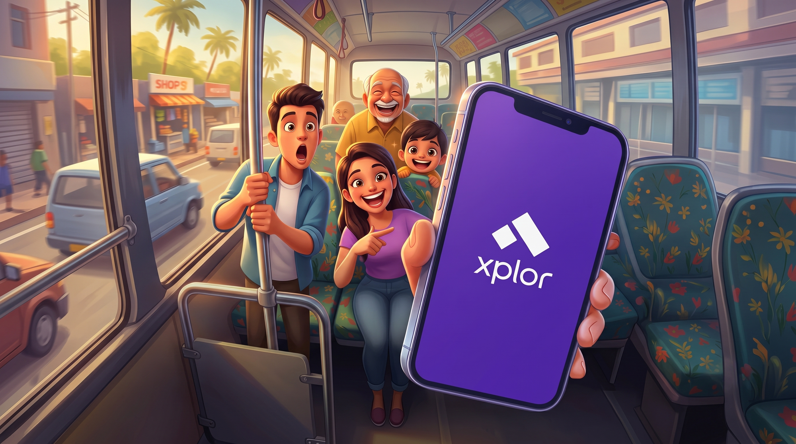
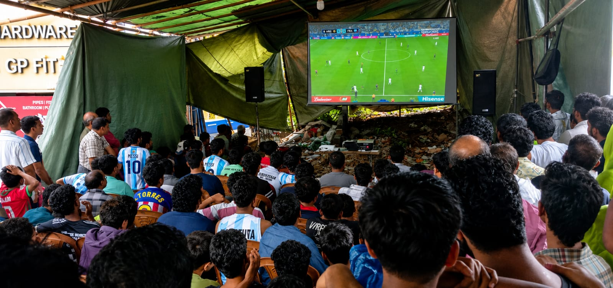
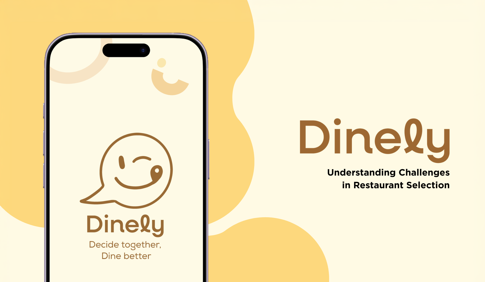
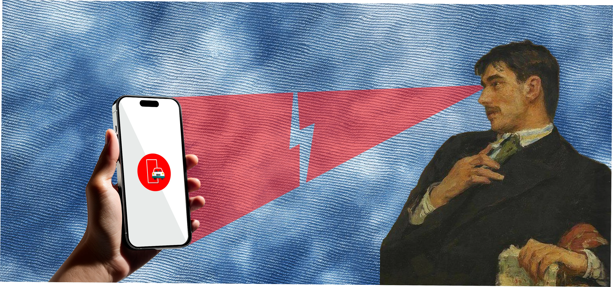
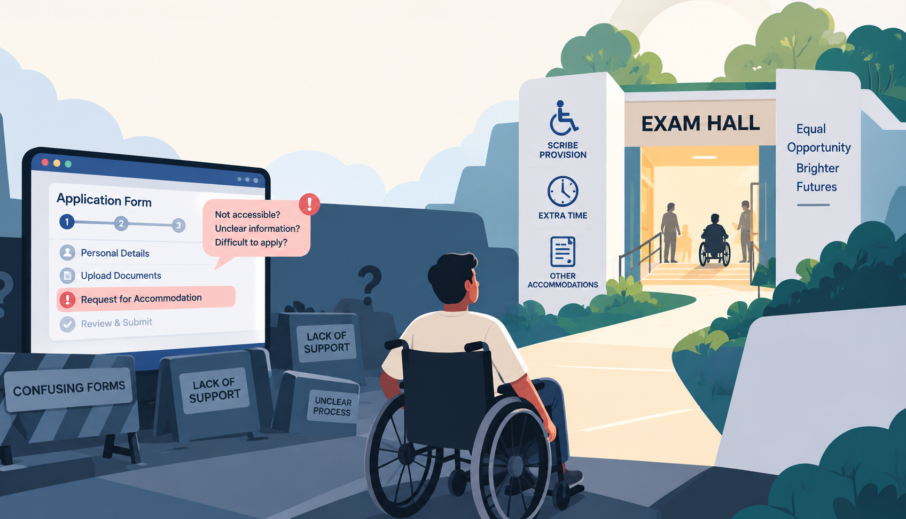

ALL PROJECTS
A comprehensive index of product design, smart mobility, AI companions, visual identity systems, and spatial experiments.

© Xplor AI Mobility. All rights reserved.
Xplor AI Mobility
Designing and improving mobility experiences across research, journey planning, transit discovery, and multimodal UX.

© STRYDE. All rights reserved.
WHEN THE GAME IS BIG, WHY DOES INDIA'S VIEWING EXPERIENCE FEEL SMALL?
This case study explores the gap between India’s growing sports fandom and the lack of dedicated spaces to experience it—rethinking public viewing through comfort, atmosphere, immersion, and community.

Dinely
Helping individuals and groups effortlessly decide where to eat by aligning preferences, dietary needs, and choices.

© ReflexLabs AI. All rights reserved.
THE FIRST PROBLEM WASN’T THE PRODUCT. IT WAS THE FIRST IMPRESSION.
This case study explores how a weak digital first impression can undermine trust, and how research-led UX and visual design can turn a promising product into a more credible experience.

INDIA RELIES ON IT. BUT CAN PEOPLE ACTUALLY USE IT EASILY?
With 50M+ downloads, 7 lakh+ Google Play reviews, and ratings of just 3.3★ on Android and 2.2★ on iOS, mParivahan presents a striking gap between reach and satisfaction. This case study investigates what lies behind it—and whether NextGen mParivahan is truly built for the next generation.

THE EXAM IS ACCESSIBLE. IS THE JOURNEY TO IT?
Indian competitive examinations provide various provisions and accommodations for candidates with disabilities, but inclusivity often becomes an afterthought when it comes to the application process. This case study explores whether candidates can independently navigate the digital journey to access these provisions—from discovering relevant information and understanding eligibility to registering, requesting accommodations, and completing the application.

© AlexaBot. All rights reserved.
AlexaBot
Reimagining Alexa as a mobile, customizable companion with personality.

© Beyond Jerseys. All rights reserved.
Beyond Jerseys
A creative editorial publication capturing the intersection of football, fashion, and culture through visual storytelling.

© NIFT Kannur. All rights reserved.
Graduation Showcase 2026
A brand identity project for a graduation showcase, designed to unify multiple disciplines under a cohesive visual system.